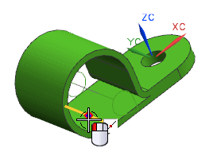
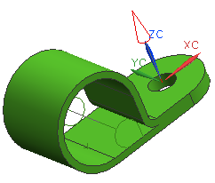
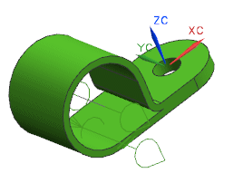

在管线布置对象列表中，右击固定件节点并选择新建。
对于端口原点，选择如图所示边的中点。

点击型材偏置点。
将方法设置为点 ，然后再次选择您刚刚选择的那个中点。
单击鼠标中键以前进至偏置矢量。
在矢量方法列表中，选择 ZC 轴。

矢量表示如果线束直径变大，则穿过端口时将生长的方向，矢量应该朝上，如果不是，请点击循环方向。
单击鼠标中键以前进至偏置表达式 ，注意距离表达式，型材将生长的距离，已被自动设置为管线段上型材直径的一半，(MAX_PATH_STOCK_DIA/2)。
点击确定。
在延伸与向后延伸输入框中，键入 Width。
点击确定。
如果需要，请循环方向，然后点击两次确定。
注意新端口上的两条直线，这表示该端口是一个型材偏置点端口。如果您想让多个线束同时穿过同一个夹子，那么您需要使用多个型材偏置点端口，每个端口穿过一条路径。

|
注释 |
另一个审核这个部件的方法是在夹子各个面的圆弧中心处放置固定件端口原点，然后使用延伸和向后延伸值来创建一条穿过部件的直线路径。 |
关闭部件。